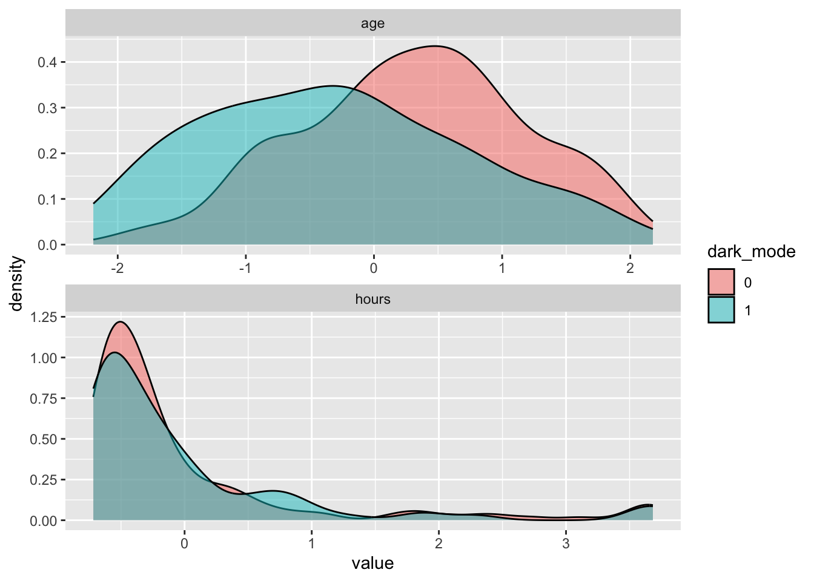
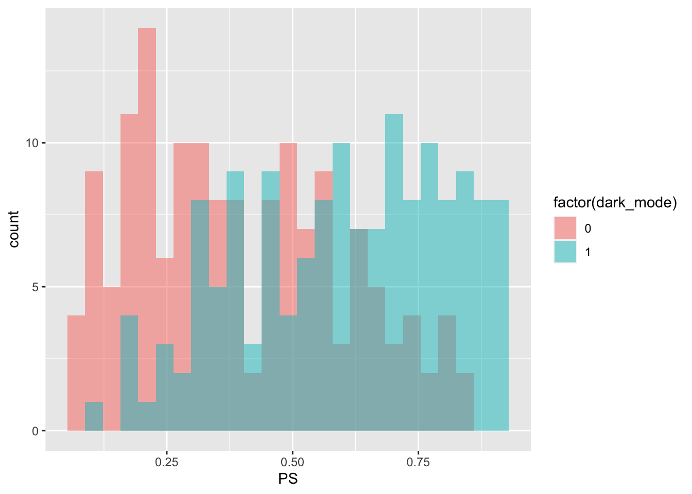
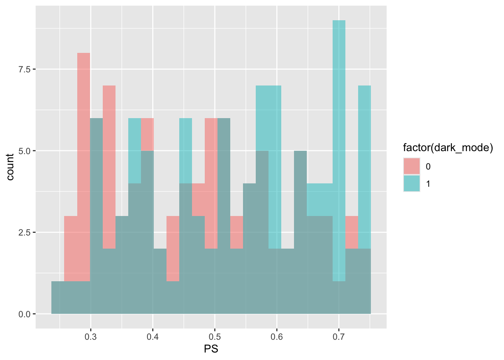
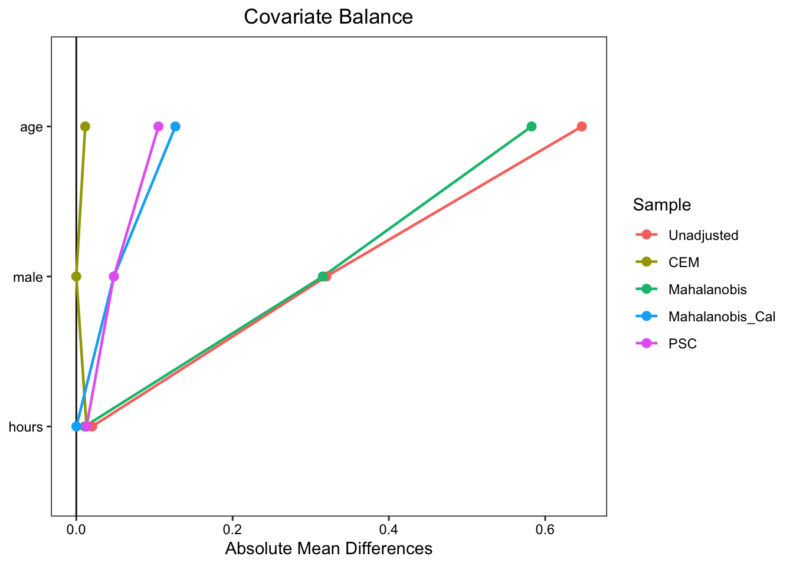
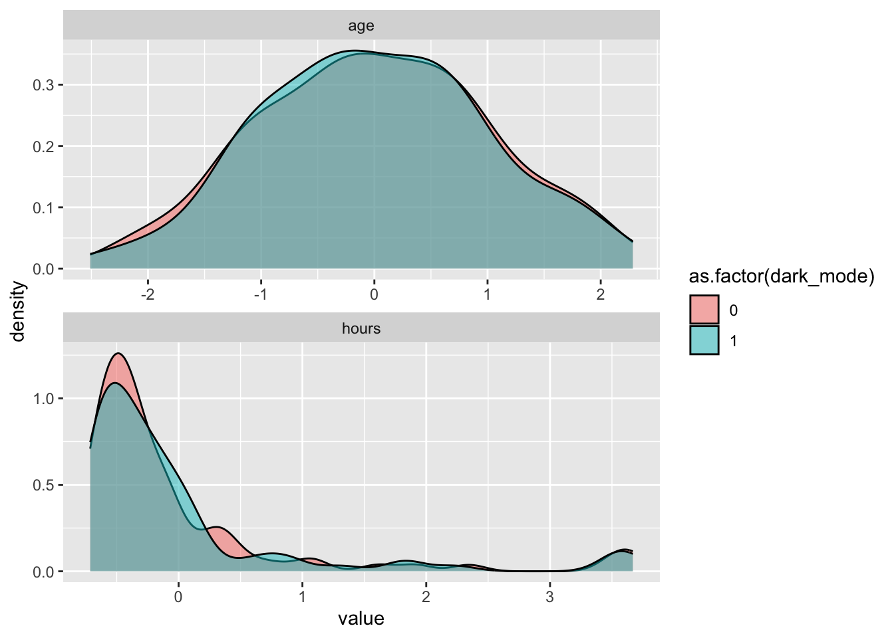
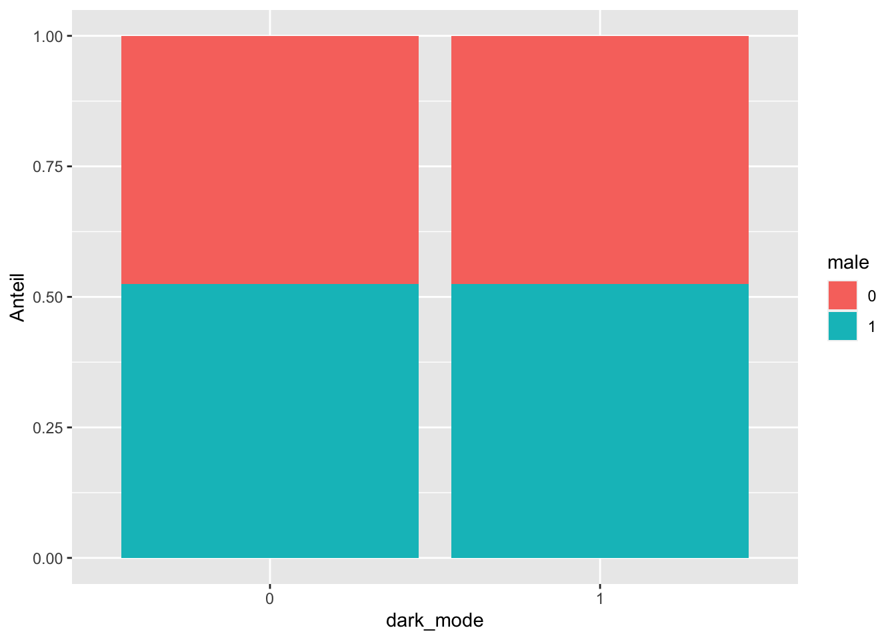

5 Matching
In randomisierten kontrollierten Studien stellt eine randomisierte Behandlung sicher, dass die Individuen beider Gruppen im Mittel vergleichbar sind, dass heißt es gibt keine systematischen Unterschiede der Studiensubjekte hinsichtlich der Verteilung von Charakteristika zwischen den Gruppen. Dann ist es plausibel eine beobachtete mittlere Differenz in der Outcome-Variable alleine auf die Behandlung zurückzuführen.
In der Praxis, insbesondere in ökonomischen Studien, sind randomisierte kontrollierte Studien aus ethischen und/oder finanziellen Gründen nicht durchführbar. Stattdessen werden nicht-experimentelle Daten genutzt, die jedoch nur sehr selten eine Vergleichbarkeit von Behandlungs- und Kontrollgruppe gewährleisten.
In diesem Kapitel betrachten wir Methoden, die in solchen Forschungsdesigns – bei hinreichenden Informationen über die Studiensubjekte – eine Schätzung kausaler Effekte ermöglichen, indem eine statistische Vergleichbarkeit von Behandlungs- und Kontrollgruppe hergestellt wird. Dies kann durch eine gezielte Gewichtung von Beobachtungen anhand invididueller Merkmale bei der Schätzung des Behandlungseffekts erfolgen. Andere etablierte Methoden schätzen den kausalen Effekt nach Selektion von vergleichbaren Teilmengen von Subjekten beider Gruppen aus der ursprünglichen Stichprobe, sogenanntes selektierendes Matching.
Da Matching Beobachtungen basierend auf beobachtbaren Merkmalen vergleicht, kann die Wahrscheinlichkeit einer verzerrten Schätzung des kausalen Effekt durch falsche Modellspezifikationen geringer sein als für eine Schätzung des Effekts anhand multipler Regression. Weiterhin basieren Matching-Methoden nicht auf der Annahme eines linearen Zusammenhangs zwischen Kovariablen und der erklärenden Variable und können für die Schätzung unterschiedlicher Spezifikationen von Behandlungseffekten herangezogen werden.
Für die Gültigkeit eines Schätzers basierend auf Matching sind zwei Annahmen erforderlich.
Bedingte Unabhängigkeit. Seien \(Y^{(0)}_i\) und \(Y^{(1)}_i\) potentielle Ergebnisse der Outcome-Variable \(Y\) für ein Subjekt \(i\) mit \(B_i=0\) (keine Zuweisung zur Behandlung) beziehungsweise \(B_i=1\) (Behandlung) und \(X_i\) die beobachteten Kovariablen. Wir nehmen an, dass \[\begin{align} \left\{Y^{(0)}_i, Y^{(1)}_i\right\} \perp B_i\vert X_i, \label{eq:cia} \end{align}\] d.h. die Behandlungszuweisung/-selektion ist unanabhängig von den potentielle Ergebnissen \(Y^{(0)}_i\) und \(Y^{(1)}_i\), wenn wir für die Kovariablen \(X\) kontrollieren.
Überlappung. Für jede mögliche Kombination von Kovariablen \(X_i\) gibt es eine positive Wahrscheinlichkeit \(<1\), sowohl zur Behandlungsgruppe (\(B_i = 1\)) als auch zur Kontrollgruppe (\(B_i = 0\)) zugewiesen zu werden, \[\begin{align} 0 < \text{P}(B_i=1\lvert X_i) < 1, \label{eq:overlap} \end{align}\] d.h. keine Beobachtung hat eine Behandlungswahrscheinlichkeit von exakt \(0\) oder \(1\).
Annahme 1 stellt sicher, dass die Zuweisung zur Behandlungsgruppe nach Kontrolle für die Kovariablen \(X\) als zufällig betracht werden kann. Somit ist es möglich den kausalen Effekt der Behandlung zu identifizieren, indem wir hinsichtlich der Kovariablen \(X\) ähnliche Subjekte (vgl. Annahme 2) aus Kontroll- und Behandlungsgruppe vergleichen.
Annahme 2 setzt vorraus, dass es eine ausreichende Überlappung in den Verteilungen der Kovariablen zwischen Behandlungs- und Kontrollgruppe gibt. Dann ist sichergestellt, dass für jedes Subjekt in einer Gruppe ein hinsichtlich seiner Charakteristika vergleichbares Subjekt in der anderen Gruppe geben kann, sodass ein Vergleich möglich ist.
5.1 Balance: Vergleichbarkeit von Behandlungs- und Kontrollgruppe
Der Lehrstuhl für Ökonometrie an der Universität Duisburg-Essen betreibt einen Ökonometrie-Blog und interessiert sich für den kausalen Effekt der Einführung eines darkmode auf die Verweildauer der User auf der Webseite. Die Webseite ist zwar nicht-kommerziell, hat sich allerdings insb. für die Aquise internationaler Studierender für den Studiengang MSc. Econometrics als wichtiges Marketing-Instrument erwiesen. Ein anprechendes Design wird daher als hoch-relevant erachtet.
Idealerweise sollte der Effekt des Design-Relaunches auf die Nutzungsintensität in einem kontrollierten randomisierten Experiment untersucht werden. Hierbei würden wir Nutzern zufällig das neue oder das alte Design zuweisen und den Effekt als Differnz des durchschnittlichen Verweildauer für die Gruppen bestimmen. Eine solche Studie ist jedoch aus technischen und finanziellen Gründen nicht realisierbar, sodass die Auswirkungen des darkmode mit vorliegenden nicht-experimenellen Nutzungsstatistiken für die Webseite geschätzt werden sollen.
Die Nutzungsstatistiken sind im Datensatz darkmode.csv enthalten und sollen der Analyse des Effekts des darkmode (dark_mode) auf die Verweildauer der Leser auf der Webseite (read_time) dienen.
Tabelle 5.1 zeigt die Definitionen der Variablen in darkmode.csv.
| Variable | Beschreibung |
|---|---|
| read_time | Lesezeit (Minuten/Woche) |
| dark_mode | Indikator: Beobachtung nach Einführung darkmode |
| male | Indikator: Individuum männlich |
| age | Alter (in Jahren) |
| hours | Bisherige Verweildauer auf der Seite |
Für die Analyse lesen wir zunächst den Datensatz darkmode.csv mit readr::read_csv() ein und verschaffen uns einen Überblick über die verfügbaren Variablen.
dark_mode hat den Typ logical. Mit dplyr::mutate_all() können wir komfortabel alle Spalten in den Typ numeric transformieren.
# Alle Variablen zu typ 'numeric' formatieren...
darkmode <- darkmode %>%
mutate_all(.funs = as.numeric)
# ... und überprüfen
glimpse(darkmode)Rows: 300
Columns: 5
$ read_time <dbl> 14.4, 15.4, 20.9, 20.0, 21.5, 19.5, 22.0, 17.4, 23.6, 15.7, …
$ dark_mode <dbl> 0, 0, 1, 0, 1, 0, 1, 0, 0, 0, 0, 1, 0, 1, 1, 1, 1, 0, 0, 0, …
$ male <dbl> 0, 1, 0, 0, 0, 0, 0, 0, 0, 0, 0, 1, 0, 1, 0, 1, 0, 1, 0, 0, …
$ age <dbl> 43, 55, 23, 41, 29, 64, 18, 53, 59, 53, 43, 38, 42, 23, 39, …
$ hours <dbl> 65.6, 125.4, 642.6, 129.1, 190.2, 185.3, 333.5, 279.3, 1302.…Eine naive Schätzung des durchschnittlichen Behandlungseffekts (ATE) \(\widehat{\tau}^{\text{naiv}}\) erhalten wir als Mittelwertdifferenz von read_time für die Behandlungsgruppe (dark_mode == 1) und die Kontrollgruppe (dark_mode == 0) \[\begin{align}
\widehat{\tau}^{\text{naiv}} = \overline{\text{read\_time}}_{\text{Behandlung}} - \overline{\text{read\_time}}_{\text{Kontrolle}}.\label{eq:naivATEdarkmode}
\end{align}\]
Diese Berechnung ist schnell mit R durchgeführt.
# Naiver Schätzer für ATE:
# Differenz der Gruppen-Durchschnitte
# Outcome in Behandlungsgruppe
read_time_mTG <- darkmode %>%
filter(dark_mode == 1) %>%
pull("read_time")
# Outcome in Kontrollgruppe
read_time_mKG <- darkmode %>%
filter(dark_mode == 0) %>%
pull("read_time")
# Mittelwert-Differenz
mean(read_time_mTG) - mean(read_time_mKG)[1] -0.4446331Die Schätzung ergibt einen negativen Behandlungseffekt, mit der Interpreation, dass das neue Design zu einer Reduktion der Lesezeit um etwa 0.44 Minuten pro Woche führt. Dieses Ergebnis ist allerdings zweifelhaft, weil eine Isolierung des Behandlungseffekts aufgrund von Backdoor-Pfaden im DGP vermutlich nicht gewähleistet ist. Ein Indikator hierfür sind systematische Unterschiede hinsichtlich von (möglicherweise unbeobachtbaren) Charakteristika von Kontrollgruppe und Behandlungsgruppe.
Da die User sich beim Aufrufen der Seite aktiv für oder gegen den das neue Design entscheiden müssen (und somit selektieren, ob Sie in der Behandlungs- oder Kontrollgruppe landen), liegt wahrscheinlich Confounding vor: Unsere Hypothese ist zunächst, dass männliche User eine durchschnittlich längere Lesezeit aufweisen und mit größerer Wahrscheinlichkeit auf das neue Design wechseln als nicht-männliche Leser. Dann ist male eine Backdoor-Variable. Diese Situation ist unter der Annahme, dass nur diese Faktoren den DGP bestimmen, in Abbildung 5.1 dargestellt.
Der DGP in Abbildung 5.1 führt zu einer verzerrten Schätzung des kausalen Effekts von dark_mode auf read_time mit \(\eqref{eq:naivATEdarkmode}\), wenn das Verhältnis von männlichen und nicht-männlichen Usern in Bahandlungs- und Kontrollgruppe nicht ausgeglichen ist. Wir überprüfen dies mit R.
# Anteile männlicher und nicht-männlicher User
(
anteile <- darkmode %>%
group_by(dark_mode) %>%
summarise(
gesamt = n(),
ant_m = mean(male),
ant_nm = 1 - ant_m,
anz_m = sum(male),
anz_nm = gesamt - anz_m
)
)# A tibble: 2 × 6
dark_mode gesamt ant_m ant_nm anz_m anz_nm
<dbl> <int> <dbl> <dbl> <dbl> <dbl>
1 0 151 0.338 0.662 51 100
2 1 149 0.658 0.342 98 51Die Zusammenfassung anteile_m zeigt, dass der Anteil männlicher User in der Behandlungsgruppe deutlich höher ist als in der Kontrollgruppe.
5.1.1 Matching durch Gewichtung
Matching eliminiert die Variation von male zwischen den Gruppen. Eine Möglichkeit hierfür ist die Gewichtung der Beobachtungen in der Kontrollgruppe entsprechend der Anteile von Männern und Nicht-Männern in der Behandlungsgruppe, sodass die Vergleichbarkeit mit der Behandlungsgruppe hinsichtlich des Geschlechts gewährleistet ist. Dies wird in der Literatur als Balance bezeichnet. Der Behandlungseffekt wird dann analog zu \(\eqref{eq:naivATEdarkmode}\) geschätzt.
Die Gewichte für Beobachtungen in der Kontrollgruppe \(w_i\) werden berechnet als \[\begin{align}
w_i =
\begin{cases}
\text{ant\_m}_B/\text{anz\_m}_{K}, & \text{falls } \text{male}_i = 1\\
\text{ant\_nm}_B/\text{anz\_nm}_{K}, & \text{sonst.}\\
\end{cases}\label{eq:darkmodeweights}
\end{align}\] Anhand der Formel für einen gewichteten Durchschnitt, \[\begin{align}
\overline{X}_w = \frac{\sum_i w_i \cdot X_i}{\sum_i w_i},
\end{align}\] berechnen wir die gewichteten Mittelwerte für male und read_time in der Kontrollgruppe.
# Gewichtete Mittel für Kontrollgruppe berechnen
(
gew_K <- darkmode %>%
filter(dark_mode == 0) %>%
select(read_time, male) %>%
mutate(w = ifelse(
male == 1,
ant_m_B/anz_m_K,
ant_nm_B/anz_nm_K)
) %>%
summarise(
male_k = sum(male * w) / sum(w),
mean_read_time_wK = sum(read_time * w) / sum(w)
)
)# A tibble: 1 × 2
male_k mean_read_time_wK
<dbl> <dbl>
1 0.658 18.1Ein Vergleich des gewichteten Mittelwertes von male in der Kontrollgruppe mit dem Mittelwert in der Behandlungsgruppe (male_k) zeigt, dass die Gewichte die Variation in male zwischen beiden Gruppen eliminieren, sodass die Backdoor durch male geschlossen ist. Mit wmean_read_time_K haben wir einen entsprechend gewichteten Mittelwert der Verweildauer für die Kontrollgruppe berechnet. Wir schätzen den Behandlungseffekt nun als \[\begin{align}
\widehat{\tau}^{\text{w}} = \overline{\text{read\_time}}_{B} - \overline{\text{read\_time}}_{w,K}.\label{eq:weightedATEdarkmode}
\end{align}\]
mean(read_time_mTG) - gew_K$mean_read_time_wK[1] 0.6383579Entgegen der naiven Schätzung andhand von \(\eqref{eq:naivATEdarkmode}\) erhalten wir nach Matching für male eine positive Schätzung des Behandlungseffekts von etwa \(0.64\).
Die Schätzung des Behandlungseffekts anhand von \(\eqref{eq:weightedATEdarkmode}\) entspricht dem geschätzten Koeffizienten \(\widehat{\beta}_1\) aus einer gewichteten KQ-Regression im Modell \[\begin{align*} \text{read\_time} = \beta_0 + \beta_1 \text{dark\_mode} + u, \end{align*}\] wobei die Beobachtungen der Kontrollgruppe wie in \(\eqref{eq:darkmodeweights}\) gewichtet werden und \(w_i=1\) für Beobachtungen der Behandlungsgruppe ist. Wir überprüfen dies mit R.
darkmode_w <- darkmode %>%
mutate(
w = case_when(
male == 1 & dark_mode == 0 ~ ant_m_B/anz_m_K,
male == 0 & dark_mode == 0 ~ ant_nm_B/anz_nm_K,
T ~ 1
)
)
lm(read_time ~ dark_mode, weights = w, data = darkmode_w) %>%
summary()
Call:
lm(formula = read_time ~ dark_mode, data = darkmode_w, weights = w)
Weighted Residuals:
Min 1Q Median 3Q Max
-11.4302 -0.6929 0.0814 0.7230 12.8698
Coefficients:
Estimate Std. Error t value Pr(>|t|)
(Intercept) 18.0918 3.4796 5.199 3.72e-07 ***
dark_mode 0.6384 3.4912 0.183 0.855
---
Signif. codes: 0 '***' 0.001 '**' 0.01 '*' 0.05 '.' 0.1 ' ' 1
Residual standard error: 3.48 on 298 degrees of freedom
Multiple R-squared: 0.0001122, Adjusted R-squared: -0.003243
F-statistic: 0.03343 on 1 and 298 DF, p-value: 0.855Der geschätzte Koeffizient von dark_mode entspricht \(\widehat{\tau}^w\).
Da male eine binäre Variable ist, reduziert sich eine Beurteilung der Vergleichbarkeit der Verteilungen von male in Behandlungs- und Kontrollgruppe auf einen simplen Vergleich des Männeranteils beider Gruppen. In der Praxis gibt es meist eine Vielzahl potentieller Backdoor-Variablen, die zudem kontinuierlich verteilt sind. Es scheint plausibel, dass das Alter der Nutzer sowohl die Akzeptanz des Design-Updates als auch die Lesezeit beeinflusst. Die bisherige Verweildauer ist mindestens eine plausible Determinante der Lesezeit.
Der erweiterte DGP ist in Abbildung Abbildung 5.2 dargestellt, wobei der zusätzliche Backdoor-Pfad durch age ebenfalls mit roten Pfeilen gekennzeichnet sind.
Die Beurteilung der Balance von Kontrollgruppe und Behandlungsgruppe kann durch eine grafische Gegenüberstellung der empirischen Verteilungen der Kovariablen beider Gruppen erfolgen. Wir visualisieren die empirischen Verteilungen mit ggplot2. Hierzu standardisieren wir age und hours zunächst mit scale().
# Datensatz für graphische Darstellung formatieren
darkmode_p <- darkmode %>%
# Standardisierung mit 'scale()'
mutate(
dark_mode = as_factor(dark_mode),
age = scale(age),
hours = scale(hours)
)
head(darkmode_p)# A tibble: 6 × 5
read_time dark_mode male age[,1] hours[,1]
<dbl> <fct> <dbl> <dbl> <dbl>
1 14.4 0 0 0.0377 -0.591
2 15.4 0 1 1.11 -0.459
3 20.9 1 0 -1.74 0.684
4 20 0 0 -0.141 -0.451
5 21.5 1 0 -1.21 -0.316
6 19.5 0 0 1.91 -0.327Für age und hours eignen sich die geschätzten Dichtefunktionen für einen Vergleich der Verteilungen in Behandlungs- und Kontrollgruppe.
# Vergleich mit Dichteschätzungen
darkmode_p %>%
select(dark_mode, hours, age) %>%
# in langes Format überführen
pivot_longer(cols = c(-dark_mode)) %>%
ggplot(
aes(x = value, fill = dark_mode)
) +
geom_density(alpha = .5) +
facet_wrap(
facets = ~ name,
scales = "free",
nrow = 2
)
Die graphische Analyse zeigt deutliche Unterschiede in den Verteilungen von age zwischen Kontroll- und Behandlungsgruppe. Für einen Beurteilung mit deskriptiven Statistiken wird häufig eine sogenannte Balance Table herangezogen. Wir berechnen diese für age, hours und male mit cobalt::bal.tab()
library(cobalt)
# Balance table mit 'cobalt::bal.tab()'
bal.tab(
x = darkmode %>%
select(age, hours, male),
treat = darkmode$dark_mode,
# berechne SMD für KG und TG:
disp = "m",
s.d.denom = "pooled"
)Balance Measures
Type M.0.Un M.1.Un Diff.Un
age Contin. 46.0132 39.0940 -0.6469
hours Contin. 337.7775 328.5738 -0.0203
male Binary 0.3377 0.6577 0.3200
Sample sizes
Control Treated
All 151 149Die Einträge M.0.Un und M.1.Un zeigen die jeweiligen Stichprobenmittelwerte der Variablen für Kontroll- und Behandlungsgruppe. Diff.Un gibt eine standardisierte Mittelwertdifferenz \(SMD\) an, wobei \[\begin{align*}
SMD_j := \left(\overline{X}_{j,B} - \overline{X}_{j,K}\right) \bigg/ \sqrt{\frac{1}{2}\left(\widehat{\text{Var}}(X_{j,B}) + \widehat{\text{Var}}(X_{j,K})\right)},
\end{align*}\] mit Stichprobenmitteln \(\overline{X}_{j,B}\) und \(\overline{X}_{j,K}\) und Stichprobenvarianzen \(\widehat{\text{Var}}(X_{j,B})\) und \(\widehat{\text{Var}}(X_{j,K})\) für eine kontinuierliche Kovariable \(j\).1 Obwohl es keinen einheitlichen Schwellenwert für die standardisierte Differenz gibt, der ein erhebliches Ungleichgewicht anzeigt, gilt für kontinuierliche Variablen eine standardisierte (absolute) Differenz von weniger als \(0.1\) als Hinweis auf einen vernachlässigbaren Unterschied zwischen den Gruppen.
1 Siehe P. Austin (2011) für einen Überblick zu Balance-Statistiken.
Die Balance Table weist also auf einen vernachlässigbaren Unterschied für hours hin und bestätigt den aus den Grafiken abgeleiteten Eindruck einer relevanten Differenzen für age.
5.1.2 Entropy Balancing
Entropy Balancing (Hainmueller 2012) ist eine weitere Methode zur Gewährleistung der Vergleichbarkeit von Behandlungs- und Kontrollgruppe anhand von Gewichten. Das Verfahren nutzt Konzepte aus der Informationstheorie um die Gewichte für Subjekte in der Kontrollgruppe so anzupassen, dass die Verteilung der Matchingvariablen in der Kontrollgruppe die Verteilung in der Behandlungsgruppe möglichst gut approximiert. Dies geschieht unter der Restriktion, dass bestimmte empirische Momente (meist Mittelwerte und Varianzen) der Matchingvariablen exakt übereinstimmen. Mathematisch werden die Gewichte für Kontrollgruppenbeobachtungen durch Minimierung der Kullback-Leibler-Divergenz zwischen den Verteilungen gefunden, wobei die Divergenz ein Maß für den Unterschied von Wahrscheinlichkeitsverteilungen ist.
Entropy Balancing ist im R-Paket WeightIt implementiert. Wir zeigen, wie die benötigten Gewichte für eine Schätzungen des ATT im Website-Beispiel mit WeightIt::wightit() bestimmt werden können. Über das Argument moments legen wir fest, dass die Gewichte unter der Restriktion übereinstimmender Mittelwerte aller Matching-Variablen zwischen Behandlungs- und Kontrollgruppe erfolgen soll.
library(WeightIt)
# Gewichte für Entropy Balancing
(
W1 <- weightit(
dark_mode ~ age + male + hours,
data = darkmode,
method = "ebal",
estimand = "ATT",
moments = 1
)
)A weightit object
- method: "ebal" (entropy balancing)
- number of obs.: 300
- sampling weights: none
- treatment: 2-category
- estimand: ATT (focal: 1)
- covariates: age, male, hoursWir schätzen den Behandlungseffekt nach Entropy Balancing mit gewichteter Regression.
# Mittelwert-Vergleich mit lm()
fit <- lm(
formula = read_time ~ dark_mode,
data = darkmode,
weights = W1$weights
)
summary(fit)
Call:
lm(formula = read_time ~ dark_mode, data = darkmode, weights = W1$weights)
Weighted Residuals:
Min 1Q Median 3Q Max
-16.6652 -2.3552 0.8786 2.9585 27.1808
Coefficients:
Estimate Std. Error t value Pr(>|t|)
(Intercept) 17.7601 0.4093 43.395 <2e-16 ***
dark_mode 0.9701 0.5807 1.671 0.0959 .
---
Signif. codes: 0 '***' 0.001 '**' 0.01 '*' 0.05 '.' 0.1 ' ' 1
Residual standard error: 5.029 on 298 degrees of freedom
Multiple R-squared: 0.009278, Adjusted R-squared: 0.005953
F-statistic: 2.791 on 1 and 298 DF, p-value: 0.09586Beachte, dass die von summary() berechneten Standardfehler bei Entropy Balancing ungültig sind. In Abschnitt Kapitel 5.4 erläutern wir die Berechnung von Standardfehlern für Matching-Schätzer mit dem Bootstrap.
5.1.3 Mehrere Matching-Variablen und der Propensity Score
Bei mehreren Backdoor-Variablen kann eine Gewichtung anhand der Behandlungswahrscheinlichkeit (Treatment Propensity) erfolgen. Die Idee hierbei ist, dass der DGP wie in Abbildung 5.3 dargestellt werden kann.
Hierbei beeinflussen die Backdoor-Variablen age und male die Behandlungsvariable dark_mode lediglich durch die Behandlungswahrscheinlichkeit Treatment Propensity. Diese Darstellung zeigt, das die mehrdimensionale Information bzgl. der Ähnlichkeit von Subjekten hinsichtlich der beobachteten Kovariablen in einer einzigen Variable zusammengefasst werden kann. Die Backdoor-Pfade können daher geschlossen werden, indem wir Subjekte anhand von Treatment Propensity derart gewichten, dass beide Gruppen hinsichtlich der Verteilung der Behandlungswahrscheinlichkeit vergleichbar sind. Betrachte erneut \(\eqref{eq:cia}\) und beachte, dass \[\begin{align} Y_i = Y_i^{(1)} D_i + Y_i^{(0)} (1-D_i). \end{align}\] Rosenbaum und Rubin (1983) zeigen, dass es hinsichtlich \(\eqref{eq:cia}\) äquivalent ist für die Treatment Propensity \(P_i(X_i):=P(B_i=1\vert X_i = x)\) zu kontrollieren, d.h. \[\begin{align} \left\{Y_i^{(1)},Y_i^{(0)}\right\} \perp B_i\vert X_i \quad\Leftrightarrow\quad \left\{Y_i^{(1)},Y_i^{(0)}\right\} \perp B_i\vert P_i(X_i). \end{align}\]
Der Behandlungseffekt kann so als Differenz von gewichteten Gruppenmittelwerten berechnet werden, mit inversem Wahrscheinlichkeitsgewicht (IPW) \(w_{i,B} = 1/P_i(X_i)\) für Beobachtungen in der Behandlungsgruppe und \(w_{i,K} = 1/(1-P_i(X_i))\) für Beobachtungen in der Kontrollgruppe, \[\begin{align} \tau^{\text{IPW}} = \frac{1}{n}\sum_{i=1}^n \left[\frac{B_i Y_i}{P_i(X_i)} - \frac{(1-B_i)Y_i}{1-P_i(X_i)} \right].\label{eq:tauipw} \end{align}\]
Grundsätzlich ist TreatmentPropensity eine nicht beobachtbare Variable und muss daher aus den Daten geschätzt werden. Eine geschätzte Behandlungswahrscheinlichkeiten \(\widehat{P}_i(X_i)\) wird als Propensity Score bezeichnet. In der Praxis erfolgt die Schätzung von Propensity Scores meist mit logistischer Regression. Ein erwartungstreuer Schätzer des ATE ist \[\begin{align} \widehat{\tau}^{\text{IPW}} = \frac{1}{n}\sum_{i=1}^n \left[\frac{B_i Y_i}{\widehat{P}_i(X_i)} - \frac{(1-B_i)Y_i}{1-\widehat{P}_i(X_i)} \right].\label{eq:hattauipw} \end{align}\] Hirano, Imbens, und Ridder (2003) diskutieren Alternativen zu \(\eqref{eq:hattauipw}\) für die Schätzung anderer Typen von Behandlungseffekten.
Wir schätzen nachfolgend die Propensity Scores für unser Anwendungsbeispiel, erläutern die Berechnung der Gewichte sowie die Schätzung von Behandlungseffekten mit gewichteter Regression. Hierbei betrachten wir eine Variante von \(\eqref{eq:hattauipw}\) mit normalisierten Gewichten \(\tilde{w}_{i,B} = w_{i,B}/\sum_i w_{i,B}\) und \(\tilde{w}_{i,K} = w_{i,K}/\sum_i w_{i,K}\) die sich jeweils zu 1 summieren.2 Dies ergibt den Hájek-Schätzer3 \[\begin{align} \widehat{\tau}_N^{\text{IPW}} = \frac{\sum_i\tilde{w}_{i,B}Y_i}{\sum_i\tilde{w}_{i,B}} - \frac{\sum_i\tilde{w}_{i,K}Y_i}{\sum_i\tilde{w}_{i,K}}.\label{eq:hattauhajek} \end{align}\]
2 Eine Normalisierung der Gewichte reduziert die Varianz des Schätzers, vgl. Hirano, Imbens, und Ridder (2003)
3 Siehe Hájek (1971).
Zunächst Schätzen wir ein logistisches Regressionsmodell mit age, male und hours als erklärende Variablen für dark_mode.
# Logit-Modell mit 'glm()' schätzen
(
darkmode_ps_logit <- glm(
formula = dark_mode ~ age + male + hours,
data = darkmode,
family = binomial
)
)
Call: glm(formula = dark_mode ~ age + male + hours, family = binomial,
data = darkmode)
Coefficients:
(Intercept) age male hours
2.330e+00 -7.330e-02 1.623e+00 -9.293e-05
Degrees of Freedom: 299 Total (i.e. Null); 296 Residual
Null Deviance: 415.9
Residual Deviance: 346.4 AIC: 354.4Die Propensity Scores erhalten wir als angepasste Werte aus der Regression darkmode_ps_logit mit fitted(). Wir erweitern den Datensatz mit den Ergebnissen.
# Datensatz um Propensity Scores erweitern
(
darkmode_probs <-
darkmode %>%
mutate(
PS = fitted(darkmode_ps_logit)
)
)# A tibble: 300 × 6
read_time dark_mode male age hours PS
<dbl> <dbl> <dbl> <dbl> <dbl> <dbl>
1 14.4 0 0 43 65.6 0.304
2 15.4 0 1 55 125. 0.478
3 20.9 1 0 23 643. 0.642
4 20 0 0 41 129. 0.335
5 21.5 1 0 29 190. 0.547
6 19.5 0 0 64 185. 0.0849
7 22 1 0 18 334. 0.727
8 17.4 0 0 53 279. 0.171
9 23.6 0 0 59 1303. 0.108
10 15.7 0 0 53 16.1 0.174
# ℹ 290 more rowsZur Beurteilung der Überlappung (vgl. Annahme \(\eqref{eq:overlap}\) können wir die Verteilung der Propensity Scores nach Behandlungs-Indikator mit Histogrammen visualisieren.
# Überlappung prüfen:
# Histogramme der PS nach Treatment-Indikator
darkmode_probs %>%
ggplot(
mapping = aes(
x = PS,
fill = factor(dark_mode)
)
) +
geom_histogram(
alpha = .5,
bins = 25,
position = "identity"
)
Ein Vergleich der Histogramme zeigt, dass die Überlappung der Propensity Scores in der linken Flanken der Verteilungen der Kontrollgruppe und in der rechten Flanke der Behandlungsgruppe schlechter wird. Wir entfernen zunächst Beobachtungen aus der Stichprobe deren Propensity Scores wenig bzw. keine Überlappung aufweisen.
# Überlappung nach trimming prüfen:
# Dichteschätzung der PS nach Treatment-Indikator
darkmode_probs %>%
ggplot(
mapping = aes(
x = PS,
fill = factor(dark_mode))
) +
geom_histogram(
alpha = .5,
bins = 25,
position = "identity"
)
IPWs anhand der Propensity Scores können schnell mit der Vorschrift \[\begin{align} \text{IPW} = \frac{\text{dark\_mode}}{\text{PS}} + \frac{1 - \text{dark\_mode}}{1 - \text{PS}}, \end{align}\] berechnet werden.
# Datensatz um IPWs erweitern
darkmode_IPW <- darkmode_probs %>%
mutate(
IPW = dark_mode / PS + (1 - dark_mode) / (1 - PS)
)
darkmode_IPW %>%
select(IPW)# A tibble: 194 × 1
IPW
<dbl>
1 1.44
2 1.91
3 1.56
4 1.50
5 1.83
6 1.38
7 1.43
8 1.47
9 2.71
10 1.42
# ℹ 184 more rowsEine Schätzung des durchschnittlichen Behandlungseffekts gemäß \(\eqref{eq:hattauhajek}\) implementieren wir mit dplyr.
darkmode_IPW %>%
group_by(dark_mode) %>%
mutate(w = IPW / sum(IPW)) %>%
summarise(weighted_mean = sum(read_time * w)) %>%
summarise(diff = diff(weighted_mean))# A tibble: 1 × 1
diff
<dbl>
1 1.90Diese Schätzung des Behandlungseffekts ist äquivalent zur gewichteten KQ-Schätzung anhand eines einfachen linearen Regressionsmodells.
# Mit IPWs gewichteter KQ-Schaetzer berechnet den ATE
model_ipw <- lm(
formula = read_time ~ dark_mode,
data = darkmode_IPW,
weights = IPW
)
summary(model_ipw)
Call:
lm(formula = read_time ~ dark_mode, data = darkmode_IPW, weights = IPW)
Weighted Residuals:
Min 1Q Median 3Q Max
-18.5086 -4.4579 0.6096 4.1345 20.4566
Coefficients:
Estimate Std. Error t value Pr(>|t|)
(Intercept) 17.9709 0.4942 36.362 < 2e-16 ***
dark_mode 1.9011 0.6952 2.735 0.00683 **
---
Signif. codes: 0 '***' 0.001 '**' 0.01 '*' 0.05 '.' 0.1 ' ' 1
Residual standard error: 6.913 on 192 degrees of freedom
Multiple R-squared: 0.03749, Adjusted R-squared: 0.03248
F-statistic: 7.478 on 1 and 192 DF, p-value: 0.006829Unsere Schätzung des ATE ist der geschätzte Koeffizient von dark_mode. Die ausgegebenen Standardfehler und Inferenzstatistiken sind jedoch ungültig aufgrund der Gewichtung mit IPWs, den inversen geschätzten Wahrscheinlichkeiten für eine Behandlung. Der Grund hierfür ist, dass die Berechnung der Standardfehler in summary() die zusätzliche Unsicherheit durch die geschätzen Propensity Scores nicht berücksichtigt! Später im Kapitel erläutern wir die Berechnung gültiger Standardfehler für IPW-Schätzer basierend auf Propensity Scores mit dem Bootstrap.
5.2 Selektierende Matching-Verfahren
Das grundsätzliche Konzept von selektierendem Matching wird in der nachstehenden interaktiven Grafik veranschaulicht. Hier betrachten wir beobachtete Ausprägungen von zwei (unabhängig und identisch verteilten) Matching-Variablen für Subjekte in der Behandlungsgruppe (blau) sowie Kontrollgruppe (rot). Als Matches qualifizieren sich sämtliche Beobachtungen der anderen Gruppe, deren Euklidische Distanz zu dem ausgewählten Punkt das über den Slider eingestellte Maximum Caliper nicht überschreitet.4 Diese Region wird durch den gestrichelten Kreis gekennzeichnet und kann über den zugehörigen Slider angepasst werden. Per Klick auf eine Beobachtung werden Matches aus der anderen Gruppe durch eine verbindende Linie und farbliches Hervorheben kenntlich gemacht. Mit dem Slider für k wird festgelegt, dass nur die nahesten k qualifizierten Beobachtungen als Matches behandelt werden. Die Grafik illustriert inbesondere, dass Beobachtungen in Abhängigkeit von k und Caliper falls gewünscht mehrfach (s.g. Matching mit Zurücklegen) oder gar nicht gematcht werden können.
4 Es handelt sich hierbei um einen Spezialfall von Matching anhand der Mahalanobis-Distanz.
Für die nachfolgenden Code-Beispiele verwenden wir das R-Paket MatchIt. MatchIt::matchit() nutzt standardmäßig Eins-zu-Eins-Matching (ohne Zurücklegen) von Beobachtungen der Treatment-Gruppe mit Beobachtungen der Kontrollgruppe.5 Die für das Matching zu verwendenden Variablen werden über das Argument formula als Funktion des Behandlungsindikators definiert. matchit() bereitet das Objekt für eine Schätzung des ATT mit einer geeigneten Funktionen, s. ?matchit und hier insb. die Erläuterungen der Argumente replace = F, ratio = 1 und estimand = "ATT" für Details. Mit cobalt::balt.tab() erhalten wir eine balance table für den gematchten Datensatz.
5 Dieses Schema zielt auf eine Schätzung des ATT ab.
Wir zeigen als nächstes, wie MatchIt::matchit() für Matching anhand der Regressoren age, hours, und male in unserem Website-Beispiel für unterschiedliche Varianten durchgeführt werden kann.
5.2.1 Exaktes Matching
Exaktes Matching ordnet einem Subjekt aus der Behandlungsgruppe ein oder mehrere Subjekte aus der Kontrollgruppe zu, wenn die boebachteten Ausprägung der Matching-Variablen exakt übereinstimmen. Hierbei muss die ‘Distanz’ zwischen den Ausprägung der Matching-Variablen folglich \(0\) sein. Dieses Verfahren findet meist bei ausschließlich diskret verteilten Merkmalen Anwendung. Bei kontinuierlich verteilten Merkmalen (vgl. die obige interaktive Grafik) sind exakte Matches zwar theoretisch unmöglich, ergeben sich jedoch in der Praxis aus der Datenerfassung, bspw. durch Rundungsfehler. In matchit() erhalten wir exaktes Ein-zu-eins-Matching mit method = "exact".
library(MatchIt)
# Exaktes Eins-zu-Eins-Matching durchführen
res_em <- matchit(
formula = dark_mode ~ age + male + hours,
data = darkmode,
estimand = "ATT",
method = "exact"
)Error in `matchit()`:
! No exact matches were found.res_emError in eval(expr, envir, enclos): object 'res_em' not foundAufgrund der kontinulierliche Verteilten Variable hours gibt es in unserem Website-Beispiel keine exakten Matches. Dieses Verfahren ist hier folglich ungeeignet.
5.2.2 Coarsened Exact Matching
Bei dieser Methode werden kontinuierliche Matching-Variablen grob (Engl. coarse) klassiert, ähnlich wie bei einem Histogram. Diese Diskretisierung ermöglicht es exakte Übereinstimmungen zwischen Behandlungs- und Kontrollgruppenbeobachtungen hinsichtlich ihrer klassierten Ausprägungen zu finden. Sowohl Behandlungs- als auch Kontrollbeobachtungen die mindestents einen exakten Match haben, werden Teil des gematchten Datensatzes. In matchit() wird Coarsened Exact Matching mit method = "cem" durchgeführt. Über das Argument cutpoints geben wir an, dass hours in 6 Klassen und age in 4 Klassen eingeteilt werden soll.6 Mit k1k = TRUE erfolgt Eins-zu-eins-Matching: Bei mehreren exakten Matches wird die Beobachtung mit der geringsten Mahalanobis-Distanz (für die unklassierten Matching-Variablen) gewählt.
6 Diese Werte wurden ad-hoc gewählt da sie zu einem guten Ergebnis führen.
# Coarsened Exact Matching
res_CEM <- matchit(
formula = dark_mode ~ age + male + hours,
data = darkmode,
estimand = "ATT",
method = "cem",
k2k = TRUE,
cutpoints = list(
"hours" = 6,
"age" = 4
)
)
res_CEMA matchit object
- method: Coarsened exact matching
- number of obs.: 300 (original), 164 (matched)
- target estimand: ATT
- covariates: age, male, hours# Balance-Table Coarsened Exact Matching
bal.tab(res_CEM)Balance Measures
Type Diff.Adj
age Contin. 0.0106
male Binary 0.0000
hours Contin. -0.0135
Sample sizes
Control Treated
All 151 149
Matched 82 82
Unmatched 69 67Mit Coarsened Exact Matching erhalten wir einen Datensatz mit 82 Beobachtungen und guter Balance.
5.2.3 Matching mit der Mahalanobis-Distanz
Die Euklidische Distanz misst den direkten Abstand zwischen zwei Punkten und ist nicht invariant gegenüber Transformationen, insbesondere bei unterschiedlichen Skalierungen und bei Korrelation der Matching-Variablen. Die Mahalanobis-Distanz hingegen ist ein standardisiertes Distanzmaß, das unter Berücksichtigung der Varianz-Kovarianz-Struktur der Daten angibt, wie viele Standardabweichungen zwei Datenpunkte voneinander entfernt sind. Die Mahalanobis-Distanz ist invariant gegenüber linearen Transformationen (Skalierung, Translation und Rotation) der Daten und bietet ein genaueres Maß für die Unähnlichkeit zweier Beobachtungen hinsichtlich ihrer Ausprägungen der Matching-Variablen.
Betrachte die Datenpunkte \(P_1=(X_1,Y_1)'\) und \(P_2=(X_2,Y_2)'\) für die Matching-Variablen \(X\) und \(Y\). Die Mahalanobis-Distanz zwischen \(P_1\) und \(P_2\) ist definiert als \[\begin{align*} d_M(P_1,\,P_2) = \sqrt{(P_1 - P_2)'\boldsymbol{S}^{-1} (P_1 - P_2)}, \end{align*}\] wobei \(\boldsymbol{S}\) die Varianz-Kovarianz-Matrix von \(X\) und \(Y\) ist. Die Mahalanobis-Distanz \(d_M(P_1,\,P_2)\) ist also die Euklidische Distanz zwischen den standardisierten Datenpunkten.
In empirischen Anwendungen ersetzen wir die (unbekannten) Komponenten der Varianz-Kovarianz-Matrix durch Stichprobenvarianten. Dies ergibt die Formel
\[\begin{align*} \widehat{d}_M(P_1,\,P_2) = \sqrt{ \begin{pmatrix} X_1 - X_2\\ Y_1 - Y_2 \end{pmatrix}' \begin{pmatrix} \widehat{\text{Var}}(X^2) & \widehat{\text{Cov}}(X, Y) \\ \widehat{\text{Cov}}(X, Y) & \widehat{\text{Var}}(Y^2) \end{pmatrix}^{-1} \begin{pmatrix} X_1 - X_2\\ Y_1 - Y_2 \end{pmatrix} }. \end{align*}\]
Die nachstehende interaktive Grafik zeigt Beobachtungen zweier Matching-Variablen, die aus einer bivariaten Normalverteilung mit positiver Korrelation generiert wurden. Diese bivariate Verteilung ist identisch für Beobachtungen aus der Kontrollgruppe (rot) und Beobachtungen aus der Behandlungsgruppe (blau). Für die ausgewählte Beobachtung aus der Behandlungsgruppe (schwarzer Rand) werden potentielle Matches in der Kontrollgruppe innerhalb der vorgegebenen Mahalanobis-Distanz in Cyan kenntlich gemacht. Beachte, dass die Mahalanobis-Distanz Varianzen und Kovarianzen der Daten berücksichtigt, sodass die gematchten Beobachtungen in einem elliptischen Bereich um die betrachtete behandelte Beobachtung liegen. Eine Euklidische Distanz hingegen (gestrichelte Linie) ignoriert die Skalierung der Daten.

Für Eins-zu-Eins-Matching im Website-Beispiel anhand der Mahalanobis-Distanz mit matchit() setzen wir distance = "mahalanobis" und wählen method = "nearest". Mit diesen Parametern wird jeder Behandlung aus der Behandlungsgruppe die gemäß \(d_M\) am ehesten vergleichbarste Beobachtung aus der Kontrollgruppe zugewiesen, wobei keine mehrfachen Matches zulässig sind.
# 1:1 Mahalanobis-Distanz-Matching
res_maha <- matchit(
formula = dark_mode ~ age + male + hours,
data = darkmode,
estimand = "ATT",
distance = "mahalanobis",
method = "nearest"
)
res_mahaA matchit object
- method: 1:1 nearest neighbor matching without replacement
- distance: Mahalanobis
- number of obs.: 300 (original), 298 (matched)
- target estimand: ATT
- covariates: age, male, hours# Balance-Table für 1:1 Mahalanobis-Matching
bal.tab(res_maha)Balance Measures
Type Diff.Adj
age Contin. -0.5826
male Binary 0.3154
hours Contin. 0.0106
Sample sizes
Control Treated
All 151 149
Matched 149 149
Unmatched 2 0Die Ergebnisse zeigen, dass für sämtliche \(149\) Beobachtungen aus der Behandlungsgruppe ein individueller Match in der Kontrollgruppe gefunden werden konnte. Es werden lediglich \(2\) Beobachtungen der \(151\) Beobachtungen in der Kontrollgruppe nicht gematcht.
Entsprechend zeigt die Balance-Table eine ähnliche Diskrepanz beider Gruppen hinsichtlich der Matching-Variablen an.
Mahalanobis-Distanz mit Caliper .25 für Propensity Scores basierend auf logistischer Regression
Für eine strengeres Matching-Kriterium kann ein Caliper, d.h. eine maximal zulässige Distanz, herangezogen werden. Die Mahalanobis-Distanz hat jedoch keine einheitliche Skala: Ob eine Distanz als groß oder klein betrachten werden kann, hängt von der Anzahl der Matching-Variablen und dem Überlappungsgrad zwischen den Gruppen ab. Daher wird die Beschränkung durch einen Caliper nicht auf \(\widehat{d}_M\) sondern auf Propensity Scores angewendet.
Im nächsten Code-Beispiel spezifizieren wir mit distance = "glm", dass Propensity Scores gemäß der Vorschrift in formula geschätzt werden. Mit mahvars = ~ age + male + hours legen wir die Matching-Variablen für die Berechnung von \(\widehat{d}_M\) fest. caliper = .25 legt fest, dass lediglich Beobachtungen der Kontrollgruppe bei einer absoluten Differenz der Propensity Scores von höchstens \(0.25\) Standardabweichungen als Match für eine Beobachtung in der Behandlungsgruppe qualifiziert sind.
# Mahalanobis-Matchig mit PS-Caliper
res_mahaC <- matchit(
formula = dark_mode ~ age + male + hours,
data = darkmode,
distance = "glm",
estimand = "ATT",
method = "nearest",
mahvars = ~ age + male + hours,
caliper = .25
)
res_mahaCA matchit object
- method: 1:1 nearest neighbor matching without replacement
- distance: Mahalanobis [matching]
Propensity score [caliper]
- estimated with logistic regression
- caliper: <distance> (0.058)
- number of obs.: 300 (original), 208 (matched)
- target estimand: ATT
- covariates: age, male, hours# Balance Table
bal.tab(res_mahaC)Balance Measures
Type Diff.Adj
distance Distance 0.1812
age Contin. -0.1176
male Binary 0.0481
hours Contin. -0.0001
Sample sizes
Control Treated
All 151 149
Matched 104 104
Unmatched 47 45Die Balance-Table zeigt einen deutlichen Effekt der Beschränkung qualifizierter Beobachtungen durch caliper = .25: Aufgrund der oberen Grenze für die Propensity-Score-Differenz von \(0.058\) wird für lediglich \(104\) Beobachtungen aus der Behandlungsgruppe ein individueller Match in der Kontrollgruppe gefunden.7 Weiterhin finden wir eine verbesserte Balance für den gematchten Datensatz.
7 Die durch caliper implizierte Obergrenze ergibt sich als .25 * sd(fitted(darkmode_ps_logit))).
5.2.4 Propensity Score Matching
Eine gängige Variante ist Matching ausschließlich anhand von Propensity Scores innerhalb eines Calipers.
# 1:1 Matching mit PS und Caliper
res_PSC <- matchit(
formula = dark_mode ~ age + male + hours,
data = darkmode,
estimand = "ATT",
distance = "glm",
method = "nearest",
caliper = .25
)
res_PSCA matchit object
- method: 1:1 nearest neighbor matching without replacement
- distance: Propensity score [caliper]
- estimated with logistic regression
- caliper: <distance> (0.058)
- number of obs.: 300 (original), 208 (matched)
- target estimand: ATT
- covariates: age, male, hours# Balance Table
bal.tab(res_PSC)Balance Measures
Type Diff.Adj
distance Distance 0.1640
age Contin. -0.0976
male Binary 0.0481
hours Contin. 0.0134
Sample sizes
Control Treated
All 151 149
Matched 104 104
Unmatched 47 45Laut Balance-Table führt Eins-zu-Eins-Matching basierend auf Propensity Scores zu einem Datensatz mit \(104\) gematchten Beobachtungen in der Behandlungsgruppe. Hinsichtlich der standardisierten Mittelwertdifferenz (Diff.Adj) erzielt diese Methode die beste Balance unter den betrachteten Ansätzen.
Vergleich der Balance verschiedener Verfahren mit Love-Plot
Standardisierte Mittelwertdifferenzen für verschiedene Matching-Verfahren können grafisch mit einem Love-Plot (Love 2004) veranschaulicht werden. Hierzu nutzen wir cobalt::love.plot() und übergeben die mit matchit() generierten Objekte im Argument weights.
# Love-Plot für
love.plot(
x = dark_mode ~ age + male + hours,
weights = list(
CEM = res_CEM,
Mahalanobis = res_maha,
Mahalanobis_Cal = res_mahaC,
PSC = res_PSC
),
data = darkmode,
line = T,
# absolute Mittelwertdifferenz plotten
abs = T
)
Die Grafik zeigt, dass Coarsened Exact Matching (CEM) unter allen betrachteten Verfahren die Stichprobe mit der besten Balance ergibt. Diesen gematchten Datensatz erhalten wir mit MatchIt::match.data().
# gematchten Datensatz zuweisen
darkmode_matched_CEM <- match.data(res_CEM)
head(darkmode_matched_CEM)# A tibble: 6 × 7
read_time dark_mode male age hours weights subclass
<dbl> <dbl> <dbl> <dbl> <dbl> <dbl> <fct>
1 15.4 0 1 55 125. 1 26
2 20.9 1 0 23 643. 1 70
3 21.5 1 0 29 190. 1 79
4 22 1 0 18 334. 1 80
5 17.4 0 0 53 279. 1 11
6 20.4 0 0 43 138. 1 9 darkmode_matched enthält Gewichte (weights) für die jeweilige Gruppe zu denen gemachte Beobachtungen gehören (subclass). Dies ist relevant, falls Beobachtungen mehrfach gematcht werden. Wegen Eins-zu-eins-Matching ohne Zurücklegen gibt es in unserem Beispiel 82 Beobachtungspaare und sämtliche Gewichte sind 1. Die Berücksichtigung der Gewicht in den nachfolgenden Aufrufen von Schätzfunktionen (bspw.lm()) ist daher nicht nötig und erfolgt lediglich zur Illustration der grundsätzlichen Vorgehensweise.
Eine Wiederholung der grafischen Analyse in Kapitel 5.1 zeigt eine deutlich verbesserte Vergleichbarkeit hinsichtlich der Verteilung der Matching-Variablen in darkmode_matched.
darkmode_matched_CEM %>%
group_by(dark_mode) %>%
select(age, hours) %>%
mutate_all(scale) %>%
pivot_longer(cols = c(-dark_mode)) %>%
ggplot(
aes(x = value, fill = as.factor(dark_mode))
) +
geom_density( alpha = .5) +
facet_wrap(
facets = ~ name,
scales = "free",
nrow = 3
)
darkmode_matched_CEM %>%
group_by(dark_mode) %>%
mutate(
male = as.factor(male),
dark_mode = as.factor(dark_mode)
) %>%
ggplot(
aes(x = dark_mode, fill = male)
) +
geom_bar(position = "fill") +
ylab("Anteil")
Wir beobachten eine bessere Balance bei age und hours. Inbesondere ist male für Kontroll- und Behandlungsgruppe ausgeglichen.
5.3 Schätzung und Inferenz für den Behandlungseffekt nach Matching
Wir schätzen nun den Behandlungseffekt von dark_mode auf read_time für die mit CEM und Propensity Score Matching ermittelten Datensätzen und vergleichen die Ergebniss anschließend mit einer Regressionsschätzung ohne Matching.
Wir kombinieren die Matching-Verfahren mit linearer Regression, d.h. wir Schätzen den Behandlungseffekt anhand es gematchten Datensatzes als Mittelwertdifferenz nach zusätzlicher Kontrolle für die Matching-Variablen. Diese Kombination von Matching mit Regression wird in der Literatur als Regression Adjustment bezeichnet und ist insbesondere hilfreich, wenn Backdoors mit Matching geschlossen werden sollen, der kausale Effekt jedoch nur unter Verwendung einer nicht-trivialen Regressionsfunktion ermittelt werden kann. Zum Beispiel kann bei einer kontinuierlichen Behandlungsvariable und einem nicht-linearen Zusammenhang mit \(Y\) der kausale Effekt nicht durch einen bloßen Mittelwertvergleich erfasst werden, sondern erfordert eine adäquate Modellierung dieses Zusammenhangs in der Regressionsfunktion. Die zusätzliche Kontrolle für Matching-Variablen kann die Varianz der Schätzung verringern und das Risiko einer verzerrten Schätzung abmildern, falls nach Matching noch Unterschiede in der Balance von Behandlungs- und Kontrollgruppe vorliegen.
# ATT mit linearem Modell schätzen: CEM Datensatz
ATT_mod_CEM <- lm(
formula = read_time ~ age + male + hours + dark_mode,
data = darkmode_matched_CEM,
weights = weights
)
summary(ATT_mod_CEM)
Call:
lm(formula = read_time ~ age + male + hours + dark_mode, data = darkmode_matched_CEM,
weights = weights)
Residuals:
Min 1Q Median 3Q Max
-8.9310 -2.3856 -0.0194 2.5407 14.0020
Coefficients:
Estimate Std. Error t value Pr(>|t|)
(Intercept) 16.6088953 1.5255529 10.887 < 2e-16 ***
age 0.0380982 0.0344699 1.105 0.27072
male -4.0915725 0.6858131 -5.966 1.53e-08 ***
hours 0.0050129 0.0006977 7.185 2.45e-11 ***
dark_mode 1.6532234 0.6149439 2.688 0.00794 **
---
Signif. codes: 0 '***' 0.001 '**' 0.01 '*' 0.05 '.' 0.1 ' ' 1
Residual standard error: 3.937 on 159 degrees of freedom
Multiple R-squared: 0.414, Adjusted R-squared: 0.3992
F-statistic: 28.08 on 4 and 159 DF, p-value: < 2.2e-16# Datensatz für Propensity Score Matching zuweisen
darkmode_matched_PSC <- match.data(res_PSC)
# ATT mit linearem Modell schätzen: PSM Datensatz
ATT_mod_PSC <- lm(
formula = read_time ~ age + male + hours + dark_mode,
data = darkmode_matched_PSC,
weights = weights
)
summary(ATT_mod_PSC)
Call:
lm(formula = read_time ~ age + male + hours + dark_mode, data = darkmode_matched_PSC,
weights = weights)
Residuals:
Min 1Q Median 3Q Max
-9.972 -2.605 -0.044 2.587 14.951
Coefficients:
Estimate Std. Error t value Pr(>|t|)
(Intercept) 17.3654519 1.2762648 13.606 < 2e-16 ***
age 0.0283941 0.0301484 0.942 0.34741
male -3.9858702 0.6480072 -6.151 4.03e-09 ***
hours 0.0046119 0.0006685 6.899 6.53e-11 ***
dark_mode 1.6346636 0.5769812 2.833 0.00507 **
---
Signif. codes: 0 '***' 0.001 '**' 0.01 '*' 0.05 '.' 0.1 ' ' 1
Residual standard error: 4.141 on 203 degrees of freedom
Multiple R-squared: 0.3171, Adjusted R-squared: 0.3037
F-statistic: 23.57 on 4 and 203 DF, p-value: 5.098e-16# ATT mit linearem Modell ohne Matching
ATT_mod_org <- lm(
formula = read_time ~ age + male + hours + dark_mode,
data = darkmode
)
summary(ATT_mod_org)
Call:
lm(formula = read_time ~ age + male + hours + dark_mode, data = darkmode)
Residuals:
Min 1Q Median 3Q Max
-10.2697 -2.6710 0.0164 2.5909 14.5739
Coefficients:
Estimate Std. Error t value Pr(>|t|)
(Intercept) 16.859075 1.082303 15.577 < 2e-16 ***
age 0.051332 0.022215 2.311 0.02154 *
male -4.485545 0.498957 -8.990 < 2e-16 ***
hours 0.004348 0.000516 8.427 1.58e-15 ***
dark_mode 1.385810 0.523793 2.646 0.00859 **
---
Signif. codes: 0 '***' 0.001 '**' 0.01 '*' 0.05 '.' 0.1 ' ' 1
Residual standard error: 4.03 on 295 degrees of freedom
Multiple R-squared: 0.3434, Adjusted R-squared: 0.3345
F-statistic: 38.57 on 4 and 295 DF, p-value: < 2.2e-16Beachte, dass für die gematchten Datensätze jeweils ein durchschnittlicher Behandlungseffekt für die Beobachtungen mit erfolgter Behandlung ermittelt wird: In sämtlichen oben gezeigten Matchibg-Verfahren werden mit estimand = "ATT" vergleichbarere Kontrollbeobachtungen für die behandelten Beobachtungen ermittelt. Wir schätzen den Effekt der Behandlung, indem wir die Ergebnisse von behandelten Personen mit denen von gematchten Personen vergleichen, die keine Behandlung erhalten haben. Diese Vergleichsgruppe dient als Ersatz für den hypothetischen Zustand der Behandlungsgruppe, wenn keine Behandlung erfolgt wäre. Dies entspricht der Definition eines ATT — ein average treatment effect on the treated.
5.3.1 Cluster-robuste Standardfehler
Für Matching-Verfahren sind die mit summary() berechneten Standardfehler (und damit auch Konfidenzintervalle, t-Statistiken und p-Werte) für den Behandlungseffekt grundsätzlich ungültig. Je nach Matching-Verfahren liegen unterschiedliche Quellen von Schätzunsicherheit vor, die bei der Berechnung von Standardfehlern zusätzlich zu der “üblichen” Stichproben-Variabilität berücksichtig werden müssen. Gründe hierfür sind der Matching-Prozess ansich oder weitere Unsicherheit durch die Schätzung zusätzlicher Parameter, etwa bei der Berechnung von Propensity Scores mit logistischer Regression. Eine weiterere Ursache zusätzlicher Variation durch den Matching-Prozess, die wir bisher nicht näher betrachtet haben ensteht durch Zurücklegen, d.h. wenn Beobachtungen mehrfach gematcht werden können. Auch dieser Faktor wird in der von summary() verwendeten Formel für den Standardfehler des Effekt-Schätzers nicht berücksichtigt.
Die Standardfehlerberechnung für Matching-Schätzer von Behandlungseffekten ist ein Gegenstand aktueller methodischer Forschung. P. C. Austin und Small (2014) und Abadie und Spiess (2022) belegen die Gültigkeit von cluster-robusten Standardfehlern mit Clustering auf Ebene der Beobachtungsgruppen (subclass im output von match.data()) bei Matching ohne Zurücklegen. Für Matching anhand von Propensity Scores (auch mit Zurücklegen) zeigt Imbens (2016), dass ignorieren der zusätzlichen Unsicherheit durch die Schätzung der Propensity Scores zu konservativer Inferenz für den ATE anhand eines cluster-robusten Standardfehlerschätzers führt, jedoch ungültige Inferenz für die Schätzung des ATT bedeuten kann. Ähnlich zu P. C. Austin und Small (2014) deuten die Ergebnisse der Simulationsstudie von Bodory u. a. (2020) jedoch auf grundsätzlich bessere Eigenschaften der Schätzung hin, wenn die Standardfehler nicht für die Schätzung der Propensity Scores adjustiert werden.
Weiterhin ist die Kontrolle für Kovariablen mit Erklärungskraft für die Outcome-Variable und für die Matching-Variablen mit Regression Adjustment (vgl. Kapitel 5.3) für die Schätzung des Behandlungseffekts nach Matching eine etablierte Strategie, vgl. Hill und Reiter (2006) und Abadie und Spiess (2022). So können die Varianz der Schätzung und das Risiko einer Verzerrung der Standardfehler aufgrund verbleibender Imbalance von Behandlungs- und Kontrollgruppe nach Matching verringert werden.
Zur Demonstration von (cluster)-robuster Inferenz und für eine tabellarische Zusammenfassung der Ergebnisse nutzen wir die Pakete marginaleffects und modelsummary. Mit marginaleffects::avg_comparisons() können p-Werte und Kofindenzintervalle unter Berücksichtigung von robuster Standardfehlern und der Gewichte aus dem Matching-Verfahren berechnet werden.
library(marginaleffects)
# Inferenz: Multiple Regression, ungematchter Datensatz
(
sum_orig <- avg_comparisons(
model = ATT_mod_org,
variables = "dark_mode",
# Heteroskedastie-robuste SE:
vcov = "HC3",
# Identifizierung der Kontrollgruppe:
newdata = subset(darkmode, dark_mode == 1)
)
)
Term Contrast Estimate Std. Error z Pr(>|z|) S 2.5 % 97.5 %
dark_mode mean(1) - mean(0) 1.39 0.537 2.58 0.00988 6.7 0.333 2.44
Columns: term, contrast, estimate, std.error, statistic, p.value, s.value, conf.low, conf.high, predicted_lo, predicted_hi, predicted
Type: response # Inferenz: Multiple Regression bei CEM
(
sum_CEM <- avg_comparisons(
model = ATT_mod_CEM ,
variables = "dark_mode",
# Cluster-robuste SE
vcov = ~ subclass,
newdata = subset(darkmode_matched_CEM, dark_mode == 1),
wts = "weights"
)
)
Term Contrast Estimate Std. Error z Pr(>|z|) S 2.5 % 97.5 %
dark_mode mean(1) - mean(0) 1.65 0.549 3.01 0.00262 8.6 0.576 2.73
Columns: term, contrast, estimate, std.error, statistic, p.value, s.value, conf.low, conf.high, predicted_lo, predicted_hi, predicted
Type: response # Inferenz: Multiple Regression bei PSM
(
sum_PSC <- avg_comparisons(
model = ATT_mod_PSC ,
variables = "dark_mode",
vcov = ~ subclass,
newdata = subset(darkmode_matched_PSC, dark_mode == 1),
wts = "weights"
)
)
Term Contrast Estimate Std. Error z Pr(>|z|) S 2.5 % 97.5 %
dark_mode mean(1) - mean(0) 1.63 0.565 2.89 0.00381 8.0 0.527 2.74
Columns: term, contrast, estimate, std.error, statistic, p.value, s.value, conf.low, conf.high, predicted_lo, predicted_hi, predicted
Type: response Wir fassen die Ergebnisse mit modelsummary::modelsummary() tabellarisch zusammen.
library(modelsummary)
# Tabellarische Zusammenfassung erzeugen
modelsummary(
models = list(
"Kein Matching" = sum_orig,
"Coarsened Exact" = sum_CEM,
"Propensity Scores" = sum_PSC
),
stars = T,
gof_map = "nobs",
output = "gt"
) %>%
tabopts()| Kein Matching | Coarsened Exact | Propensity Scores | |
|---|---|---|---|
| dark_mode | 1.386** | 1.653** | 1.635** |
| (0.537) | (0.549) | (0.565) | |
| Num.Obs. | 300 | 164 | 208 |
| + p < 0.1, * p < 0.05, ** p < 0.01, *** p < 0.001 | |||
5.4 Bootstrap-Schätzung kausaler Effekte bei Matching
Ein Bootstrap-Verfahren generiert mit Resampling (wiederholtes Ziehen mit Zurücklegen) aus dem Original-Datensatz (viele) künstliche Datensätze, für die der Schätzer (d.h. das gesamte Verfahren inkl. Matching!) jeweils berechnet wird. Die Verteilung der so gewonnenen Bootstrap-Schätzwerte approximiert die wahre, unbekannte Stichprobenverteilung des Schätzers des Behandlungseffekts. Mit dieser simulierten Verteilung können wir Inferenz betreiben: Wir können einen Bootstrap-Punktschätzer des Behandlungseffekts (Stichprobenmittel der Bootstrap-Schätzungen) sowie Standardfehler (Standardabweichung der der Bootstrap-Schätzungen) und p-Werte berechnen.
Der Bootstrap kann hilfreich sein, wenn unklar ist, wie Standardfehler für die Unsicherheit des Matching-Prozesses zu adjustieren sind, um gültige Inferenzsstatistiken zu erhalten. Abadie und Imbens (2008) zeigen analytisch, dass der Standard-Bootstrap die Stichprobenverteilung für Schätzer kausaler Effekte anhand von gematchten Datensätzen (d.h. bei Zuordnung/Selektion von Beobachtungen mit Matching) nicht korrekt abbilden kann. Grundsätzlich problematisch hierbei ist, wenn der Bootstrap eine verzerrte Schätzung produziert und/oder zu kleine Standardfehler liefert. Abadie und Imbens (2008) belegen die Tendenz des Bootstraps zu konservative (d.h. zu große) Standardfehler zu produzieren. Simulationsnachweise (Bodory u. a. 2020; Hill und Reiter 2006; P. C. Austin und Small 2014; P. C. Austin und Stuart 2017) finden, dass Bootstrap-Standardfehler u.a. bei Propensity Score Matching mit Zurücklegen leicht konservativ sind somit das gewünschte nominale Signifikanzniveau eines Bootstrap-Hypothesentests nicht überschritten wird, weshalb der Standard-Bootstrap trotz seiner Schwächen in der empirischen Forschung oft angewendet wird.
Wir betrachen als nächstes einen Bootstrap-Algorithmus für Inferenz bezüglich eines kausalen Effekts nach Matching und demonstrieren die Schätzung anhand unseres Website-Beispiels für den ATT nach Propensity-Score-Matching.
Wir Implementieren nun einen Bootstrap-Schätzer des ATT im Website-Beispiel für Propensity-Score-Matching. Hierzu definieren wir eine R-Funktion boot_fun() für die Schritte 1 und 2 im obigen Algorithmus.
# Bootstrap-Funktion für Schritte 1 und 2
boot_fun <- function(
data, # originale Stichprobe
i # Indexmenge f. Bootstrap-Stichprobe
) {
# Bootstrap-Stichprobe
boot_data <- data[i, ]
# 1:1 PS Matching
match_res <- matchit(
dark_mode ~ age + hours + male,
estimand = "ATT",
distance = "glm",
method = "nearest",
caliper = .25,
data = boot_data
)
# Gematchten Datensatz zuweisen
darkmode_matched <- match.data(
object = match_res,
data = boot_data
)
# Outcome-Modell schätzen
ATT_mod <- lm(
formula = read_time ~ age + male + hours + dark_mode,
data = darkmode_matched,
weights = weights
)
# ATT-Schätzung zurückgeben
return(
ATT_mod$coefficients["dark_mode"]
)
}Wir berechnen nun eine Bootstrap-Schätzung des ATT von dark_mode auf readingtime nach Propensity Score Matching mit einem caliper von 0.25 sowie den zugehörigen Standardfehler und ein 95%-KI mit der zuvor definierten Funktion boot_fun.
library("boot")
set.seed(4321)
# Anz. Bootstrap-Replikationen
B <- 999
# Bootstrap durchführen
(
boot_out <- boot(darkmode, boot_fun, R = B)
)
ORDINARY NONPARAMETRIC BOOTSTRAP
Call:
boot(data = darkmode, statistic = boot_fun, R = B)
Bootstrap Statistics :
original bias std. error
t1* 1.634664 -0.08144129 0.5935746Den Bootstrap-Schätzer des ATT sowie den Bootstrap-Standardfehler berechnen wir mit mean() und sd() anhand der 999 Bootstrap-Replikationen in boot_out$t.
Beachte, dass der Bootstrap-Schätzer des Behandlungseffekts nicht unmittelbar von boot() ausgegeben wird. original ist die Schätzung anhand der gesamten Stichprobe (d.h. ohne Bootstrap) und bias ist die Differenz zwischen dieser Schätzung und dem Mittelwert der Bootstrap-Schätzungen.
# Bootstrap-Schätzer für den Treatment-Effekt
mean(boot_out$t) [1] 1.553222# bootstrap - original = bias
mean(boot_out$t) - boot_out$t0 dark_mode
-0.08144129 Wir können prüfen, dass die Berechnung des Standardfehlers dem Stichprobenstandardabweichung der Bootstrap-Schätzungen entspricht.
# Bootstrap-Standardfehler
sd(boot_out$t)[1] 0.5935746Ein 95%-Konfidenzintervall für den kausalen Effekt erhalten wir mit boot::boot.ci().8
8 type = "bca" (bias-corrected accelerated) ist eine gängige Implementierung für die Berechnung des Konfidenz-Intervalls.
# 95% Bootstrap-KI für den Treatment-Effekt
boot.ci(
boot.out = boot_out,
type = "bca",
conf = .95
)BOOTSTRAP CONFIDENCE INTERVAL CALCULATIONS
Based on 999 bootstrap replicates
CALL :
boot.ci(boot.out = boot_out, conf = 0.95, type = "bca")
Intervals :
Level BCa
95% ( 0.527, 2.839 )
Calculations and Intervals on Original ScaleBeachte, dass der Bootstrap-Standardfehler sowie das Bootstrap-Konfidenzintervall nahe der mit avg_comarisons berechneten Werte für sum_PSC sind.
Bootstrap-Standardfehler für IPW-Schätzer des ATE berechnen
Die Bootstrap-Funktion boot_fun kann leicht für eine Schätzung des Standardfehlers für den IPW-Schätzer des ATE aus Kapitel 5.1.3 angepasst werden. Statt einer Matching-Prozedur berechnen wir hierzu für \(B\) Bootstrap-Stichproben den Schätzer \(\widehat{\tau}^\text{IPW}\) mit Trimming der Propensity Scores.
# IPW estimation with regression adjustment
IPW_boot <- function(
data,
i
) {
# Bootstrap-Stichprobe erstellen
data_boot <- data %>%
slice(i)
# Logistischee Regression
glm_fit <- glm(
formula = dark_mode ~ age + hours + male,
data = data_boot,
family = binomial
)
# Propensity Scores berechnen
data_boot <- data_boot %>%
mutate(
ps = predict(glm_fit, type = 'response')
)
# Beobachtungen anhand Propensity Scores trimmen
data_boot <- data_boot %>%
filter(
between(
x = ps,
left = .2,
right = .7
)
)
# IPW berechnen
data_boot <- data_boot %>%
mutate(
ipw = case_when(
dark_mode == 1 ~ 1 / ps,
dark_mode == 0 ~ 1 / (1 - ps))
)
# Gewichtete Mittelwerte der Gruppen
w_means <- data_boot %>%
group_by(dark_mode) %>%
summarize(m = weighted.mean(read_time, w = ipw)) %>%
arrange(dark_mode)
# ATT-Schätzwert
return(w_means$m[2] - w_means$m[1])
}set.seed(1234)
# Bootstrap für IPW durchführen
(
b_IPW <- boot(
data = darkmode,
statistic = IPW_boot,
R = 999
)
)
ORDINARY NONPARAMETRIC BOOTSTRAP
Call:
boot(data = darkmode, statistic = IPW_boot, R = 999)
Bootstrap Statistics :
original bias std. error
t1* 1.962849 0.06297654 0.6599891# Bootstrap-Schätzer und Standardfehler berechnen
mean(b_IPW$t)[1] 2.025826sd(b_IPW$t)[1] 0.6599891In diesem Fall ist der Bootstrap-Standardfehler von ca. 0.66 gut mit dem anhand von summary(model_ipw) berechneten Standardfehler vergleichbar. Ein 95%-Konfidenzintervall für den ATE erhalten wir wie zuvor mit boot.ci().
# 95% Bootstrap-KI für den ATE
boot.ci(b_IPW, type = "bca")BOOTSTRAP CONFIDENCE INTERVAL CALCULATIONS
Based on 999 bootstrap replicates
CALL :
boot.ci(boot.out = b_IPW, type = "bca")
Intervals :
Level BCa
95% ( 0.563, 3.134 )
Calculations and Intervals on Original Scale5.5 Regression, Matching und Doubly-Robust-Schätzung
Als Doubly-Robust-Schätzer bezeichnet man Methoden, die bei Fehlspezifikationen im Matching-Verfahrens oder der funktionalen Form der Regressionsfunktion für die Outcome-Variable eine zuverlässige Schätzungen des kausalen Effekts ermöglichen.9 Unter der Vorraussetzung, dass die verwendeten Matching-Variablen sämliche Backdoors schließen, ist so mit Doubly-Robust-Schätzung eine konsistente Schätzung des Behandlungseffekts unter abgeschwächten Annahmen gewähtleistet. Dies macht Doubly-Robust-Schätzer besonders nützlich in Forschungskontexten, in denen präzise Modellspezifikationen herausfordernd sind.
9 Bspw. kann eine falsche funktionale Form bei logistischer Regression eine verzerrte Schätzung von Propensity Scores und damit eine unzureichende Balance bedeuten.
Der von Wooldridge (2010) vorgeschlagene Doubly-Robust-Schätzer (IPWRA) für den ATE erreicht seine vorteilhaften Eigenschaften durch eine geschickte Kombination von IPW und Regression Adjustment.
Wir implementieren den Doubly-Robust-Schätzer des ATE von Wooldridge (2010) für das Website-Beispiel in der Funktion IPWRA() under Adaption des Schemas von IPW_boot().
# IPW estimation with regression adjustment
IPWRA <- function(
data,
i = i) {
# Bootstrap-Stichprobe zuweisen
b_data <- data %>%
slice(i)
# Logistische Regression
glm_fit <- glm(
formula = dark_mode ~ age + hours + male,
data = b_data,
family = binomial(link = 'logit')
)
# Propensity Scores berechnen
b_data <- b_data %>%
mutate(ps = predict(glm_fit, type = 'response'))
# Propensity Scores trimmen
b_data <- b_data %>%
filter(
between(
x = ps,
left = .2,
right = .7
)
)
# IPW berechnen
b_data <- b_data %>%
mutate(
IPW = case_when(
dark_mode == 1 ~ 1 / ps,
dark_mode == 0 ~ 1 / (1 - ps))
)
# Regression Adjustment:
# Schätzung des Behandlungseffekts für die ges. Stichprobe
# mit Modell für Behandlungsgruppe
mtreat <- b_data %>%
filter(dark_mode == 1) %>%
lm(read_time ~ age + hours + male, data = ., weights = .$IPW) %>%
predict(newdata = b_data) %>%
mean()
# Schätzung des Behandlungseffekts für die ges. Stichprobe
# mit Modell für Kontrollgruppe
mcont <- b_data %>%
filter(dark_mode == 0) %>%
lm(read_time ~ age + hours + male, data = ., weights = .$ipw) %>%
predict(newdata = b_data) %>%
mean()
# Regression adjusted ATE-Schätzer
return(mtreat - mcont)
}Schätzung des ATE mit IPWRA():
IPWRA(data = darkmode, i = 1:nrow(darkmode))[1] 1.96847Wie bei \(\widehat{\tau}^\text{IPW}\) gibt es keine formale Darstellung des Standardfehlers für den IPWRA-Schätzer, sodass auch hier der Bootstrap genutzt werden sollte.
set.seed(1234)
# Bootrstrap für IPWRA durchführen
(
b_IPWRA <- boot(
data = darkmode,
statistic = IPWRA,
R = B
)
)
ORDINARY NONPARAMETRIC BOOTSTRAP
Call:
boot(data = darkmode, statistic = IPWRA, R = B)
Bootstrap Statistics :
original bias std. error
t1* 1.96847 -0.001270721 0.5960465Wir berechnen die interessierenden Statistiken analog zu der Vorgehensweise in Kapitel 5.4.
# Bootstrap-IPWRA-Schätzer des ATE
mean(b_IPWRA$t)[1] 1.967199# Bootstrap-Standardfehler
sd(b_IPWRA$t)[1] 0.5960465# 95%-Bootstrap-KI für den ATE
boot.ci(b_IPWRA, type = "bca")BOOTSTRAP CONFIDENCE INTERVAL CALCULATIONS
Based on 999 bootstrap replicates
CALL :
boot.ci(boot.out = b_IPWRA, type = "bca")
Intervals :
Level BCa
95% ( 0.787, 3.098 )
Calculations and Intervals on Original ScaleDie Bootstrap-Schätzung des ATE mit IPWRA ist mit den Ergebnissen für die Bootstrap-Variante von \(\widehat{\tau}^\text{IPW}\) vergleichbar, hat allerdings einen etwas kleineren Standardfehler und ist somit genauer.